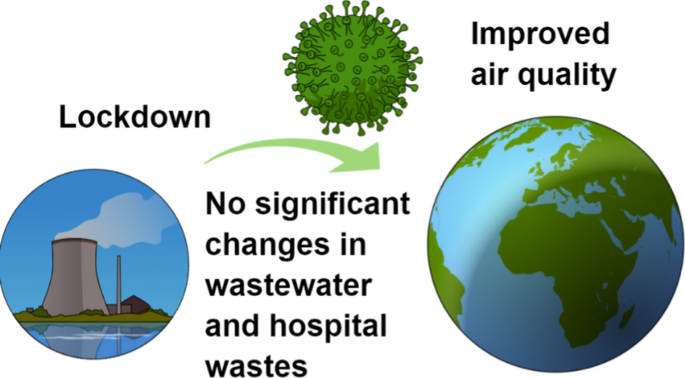

There are both positive and negative impacts on the community and the environment. The positive impacts on the environment is having less air pollution because of lockdowns. A decrease in traffic means less pollution. Noise pollution is also reduced due to less public facilities being opened. Air and water quality will also have widely improved. Carbon monoxide and nitrogen dioxide are also reduced. But ozone will be increased because there is less nitrogen oxide. However, after the pandemic the pollution will return because there will be more economic activities and energy may be used. Also, there is also a lot of medical waste being produced so there will be more trash. Poverty and the amount of undernourished people may rise due to the economy stopping and lockdowns meaning no income for some people. They may also have less to eat or maybe the food will be less nutritious. Farmers who have no labour protection have poor health so they also have trouble feeding the world.
